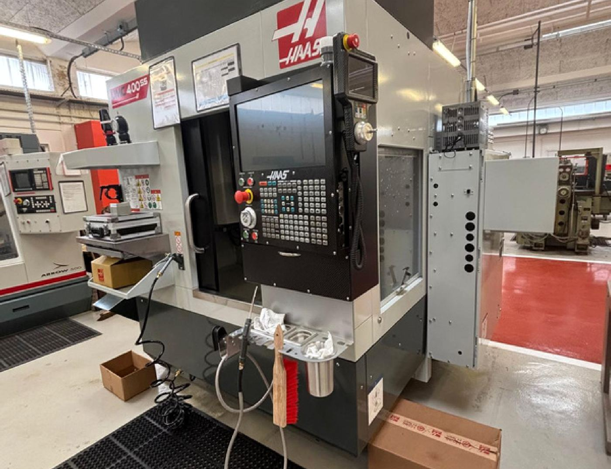
De la pré-étude fonctionnelle à la pièce usinée — méthode, précision, esprit critique.
2ᵉ année BUT GMP, en recherche d'un stage conception / industrialisation dans l'automobile — de la mécanique de série au sport automobile et au motorsport — du bureau d'études à l'atelier.
Passionné par l'ingénierie automobile de haute performance et la mécanique de précision — du sim racing au sport automobile — j'aime comprendre, analyser et améliorer le fonctionnement des systèmes mécaniques.
Ma méthode de travail s'appuie sur trois temps : décrire le contexte d'un projet, agir avec les bons outils, puis faire le bilan pour progresser — appliquée à chaque compétence du référentiel BUT GMP : Spécifier, Développer, Réaliser, Exploiter.
Auto-évaluation détaillée sur l'échelle A (autonome) → D, appuyée sur des preuves concrètes de chaque SAÉ et TP de l'année.
Analyse fonctionnelle (bête à cornes, pieuvre) du suiveur de soleil ; lecture d'un plan de fonderie et cotation GPS.
Axe : décoder plus vite les normes GPS complexes.
Modélisation et assemblage sans interférence sous Inventor ; stratégies FAO et génération du G-code par post-processeur.
Axe : s'affranchir des abaques, viser le multi-axes.
Impression 3D (tolérances sur rails), usinage CN, fiche de non-conformité NC-2025-014 formalisée selon la méthode 5M.
Axe : gagner en vitesse de réglage machine.
Anglais technique (exposé), planification par diagramme de Gantt et gestion d'équipe (projet Gear & Quiz).
Axe : aisance orale en anglais, pilotage par KPI.
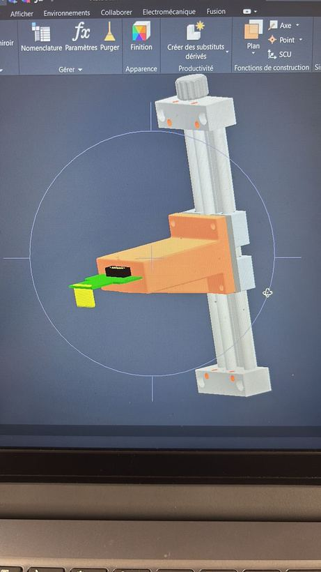
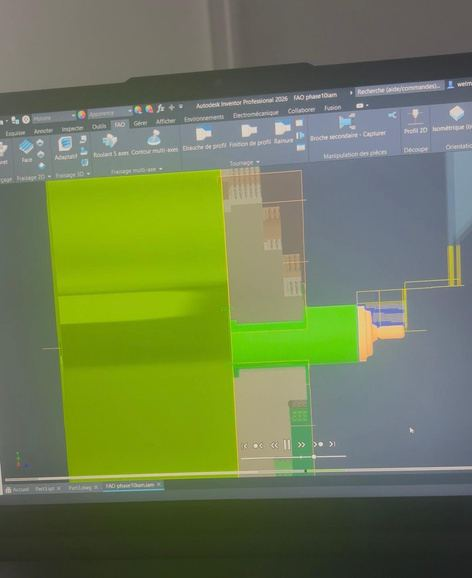
Conception d'un support d'ECU sur mesure pour un système de guidage linéaire : modélisation 3D sous Autodesk Inventor, assemblage virtuel sans interférence, puis développement complet du processus d'usinage FAO — stratégies de coupe, calcul des conditions de coupe, simulation des trajectoires et génération du programme ISO (G-code) via post-processeur.
Définition du processus d'élaboration et d'usinage d'un couvercle d'arbre brut de fonderie : repérage des surfaces fonctionnelles, définition d'un isostatisme adapté à un brut coulé, respect du transfert de cotes et gestion des surépaisseurs de matière.
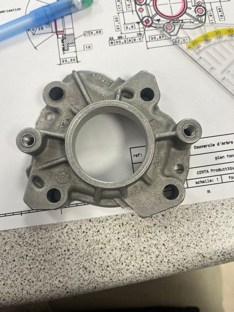
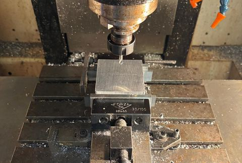
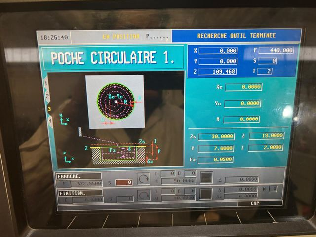
Mise en œuvre complète d'une pièce « plateau supérieur » : prises d'origines (pinule de centrage, cale électronique), programmation conversationnelle d'un cycle de poche circulaire, bridage du brut aluminium et lancement des cycles de surfaçage et d'usinage.
Préparation de la fabrication additive dans le slicer : choix de l'orientation pour garantir la solidité de la pièce, réglage du taux de remplissage et des supports, puis anticipation du retrait matière pour un emboîtement sans jeu sur le guidage linéaire.
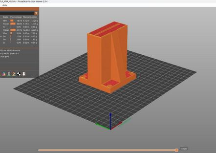
Lors d'un usinage sur alliage aluminium, l'absence d'activation de l'arrosage a provoqué une surchauffe et la perte de la pièce. Plutôt que de simplement constater l'incident, j'ai tracé l'écart, remonté à la cause racine par la méthode des 5M et verrouillé sa non-réapparition — exactement la démarche attendue en atelier de production.
Arrosage non enclenché · alliage ductile sensible à l'échauffement
Point « Arrosage ON » ajouté en tête de check-list machine
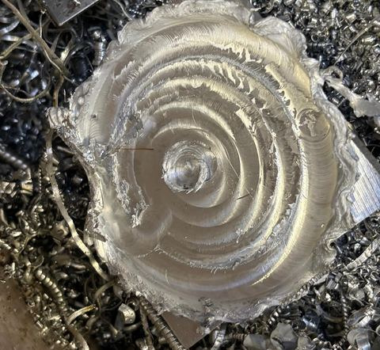
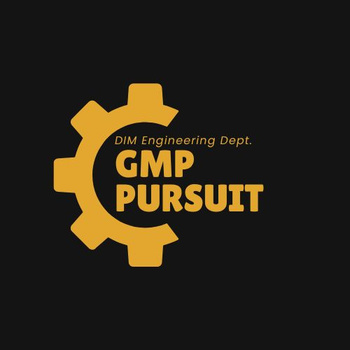
Conception et fabrication d'un jeu de société en équipe, du cadrage à la soutenance : pilotage de la planification via un diagramme de Gantt, répartition de la charge et respect des jalons entre conception, programmation et fabrication.
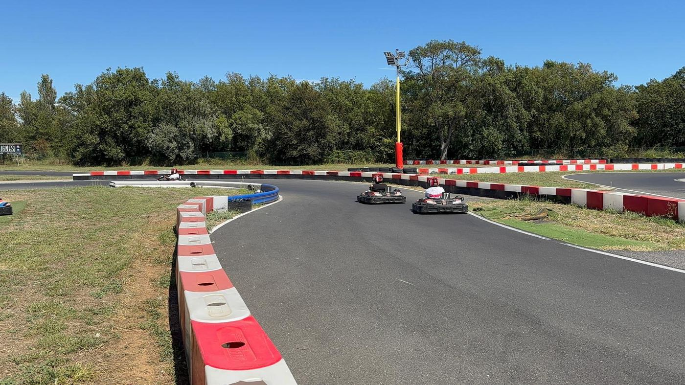
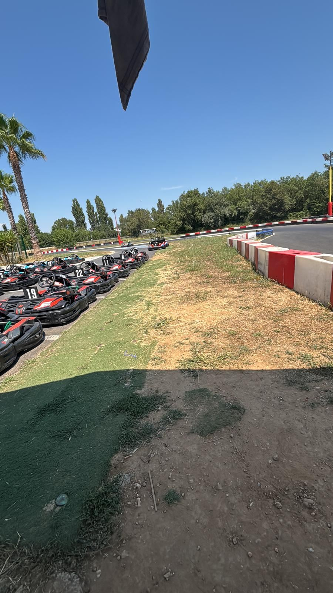
Loc'karting, Pérols
Certifié Commissaire de piste (théorie) · Fédération Française du Sport Automobile, 2025
Pratique personnelle régulière, Lunel
Cinq ans de pratique — la base de sa culture automobile générale, au-delà de la piste
Objectif immédiat : consolider autonomie et rapidité d'exécution sur des projets d'ingénierie plus complexes, au service d'une insertion réussie dans l'industrie automobile — du sport automobile au motorsport.
Disponible pour un stage de 10 semaines, du 18 janvier au 26 mars 2027, en conception, industrialisation ou méthodes — mobilité France entière.